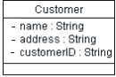
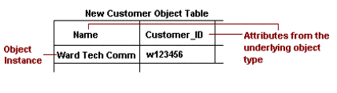
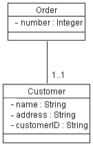

| Guideline: Forward-Engineering Relational Databases |
 |
|
| Related Elements |
|---|
IntroductionThis guideline describes methods for mapping persistent design classes in the Design Model into tables in the Data Model. Transforming Design Model Elements to Data Model ElementsPersistent classes from the design model can be transformed to tables in the Data Model. The table below shows a summary of the mapping between Design Model elements and Data Model elements.
Mapping Persistent Classes to TablesThe persistent classes in the Design Model represent the information that the system must store. Conceptually, these classes might resemble a relational design. (For example, the classes in the Design Model might be reflected in some fashion as entities in the relational schema.) As a project moves from elaboration into construction, however, the goals of the Design Model and the Relational Data Model diverge. This divergence is caused because the objective of relational database development is to normalize data, whereas the goal of the Design Model is to encapsulate increasingly complex behavior. The divergence of these two perspectives-data and behavior-leads to the need for mapping between related elements in the two models. In a relational database written in third normal form, every row in the tables-every "tuple"-is regarded as an object. A column in a table is equivalent to a persistent attribute of a class. (Keep in mind that a persistent class might have transient attributes.) Therefore, in the simple case in which there are no associations to other classes, the mapping between the two worlds is simple. The datatype of the attribute corresponds to one of the allowable datatypes for columns. Example The following class Customer:
 when modeled in the RDBMS would translate to a table called Customer, with the columns Customer_ID, Name, and Address. An instance of this table can be visualized as:
 Persistent Attributes and KeysFor each persistent attribute, questions must be asked to elicit additional information that will be used to appropriately model the persistent object in a relational Data Model. For example:
Mapping Associations Between Persistent Objects to the Data ModelAssociations between two persistent objects are realized as foreign keys to the associated objects. A foreign key is a column in one table that contains the primary key value of the associated object. Example: Assume there is the following association between Order and Customer:
 When this is mapped into relational tables, the result is an Order table and a Customer table. The Order table has columns for attributes listed, plus an additional column named Customer_ID that contains foreign-key references to the primary key of the associated row in the Customer table. For a given Order, the Customer_ID column contains the identifier of the Customer to whom the Order is associated. Foreign keys allow the RDBMS to join related information together. Mapping Aggregation Associations to the Data ModelAggregation is also modeled using foreign key relationships. Example: Assume that there is the following association between Order and Line Item:
When this is mapped into relational tables, the result is an Order table and a Line_Item table. The Line_Item table has columns for attributes listed, plus an additional column called Order_ID that contains a foreign-key reference to the associated row in the Order table. For a given Line Item, the Order_ID column contains the Order_ID of the Order with which the Line Item is associated. Foreign keys allow the RDBMS to optimize join operations. In addition, it is important to implement a cascading delete constraint that provides referential integrity in the Data Model. Once this is accomplished, whenever the Order is deleted, all of their Line Items are deleted as well. Modeling Generalization Relationships in the Data ModelThe standard relational Data Model does not support modeling inheritance in a direct way. A number of strategies can be used to model inheritance. These can be summarized as follows:
Modeling Many-to-Many Associations in the Data ModelA standard technique in relational modeling is to use an intersection entity to represent many-to-many associations. The same approach can be applied here: An intersection table is used to represent the association. Example: If Suppliers can supply many Products, and a Product can be supplied by many Suppliers, the solution is to create a Supplier/Product table. This table would contain only the primary keys of the Supplier and Product tables, and serve to link the Suppliers and their related Products. The Object Model has no analog for this table; it is strictly used to represent the associations in the relational Data Model. Refining the Data ModelOnce the design classes have been transformed into tables and the appropriate relationships in the Data Model, the model is refined as needed to implement referential integrity and optimize data access through views and stored procedures. For more information, see Guideline: Data Model. Forward-Engineering the Data ModelMost application design tools support the generation of Data Definition Language (DDL) scripts from Data Models and/or the generation of the database from the Data Model. Forward-engineering of the database needs to be planned as part of the overall application development and integration tasks. The timing and frequency for forward-engineering the database from the Data Model depends on the specific project situation. For new application development projects that are creating a new database, the initial forward-engineering might need to be done as part of the work to implement a stable architectural version of the application by the end of the elaboration phase. In other cases, the initial forward-engineering might be done in early iterations of the construction phase. The types of model elements in the Data Model that can be forward-engineered vary, depending on the specific design tools and RDBMS used on the project. In general, the major structural elements of the Data Model, including tables, views, stored procedures, triggers, and indexes can be forward-engineered into the database. |

© Copyright IBM Corp. 1987, 2006. All Rights Reserved. |